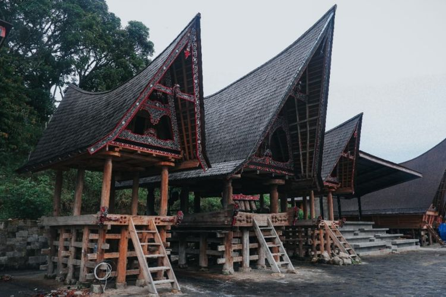
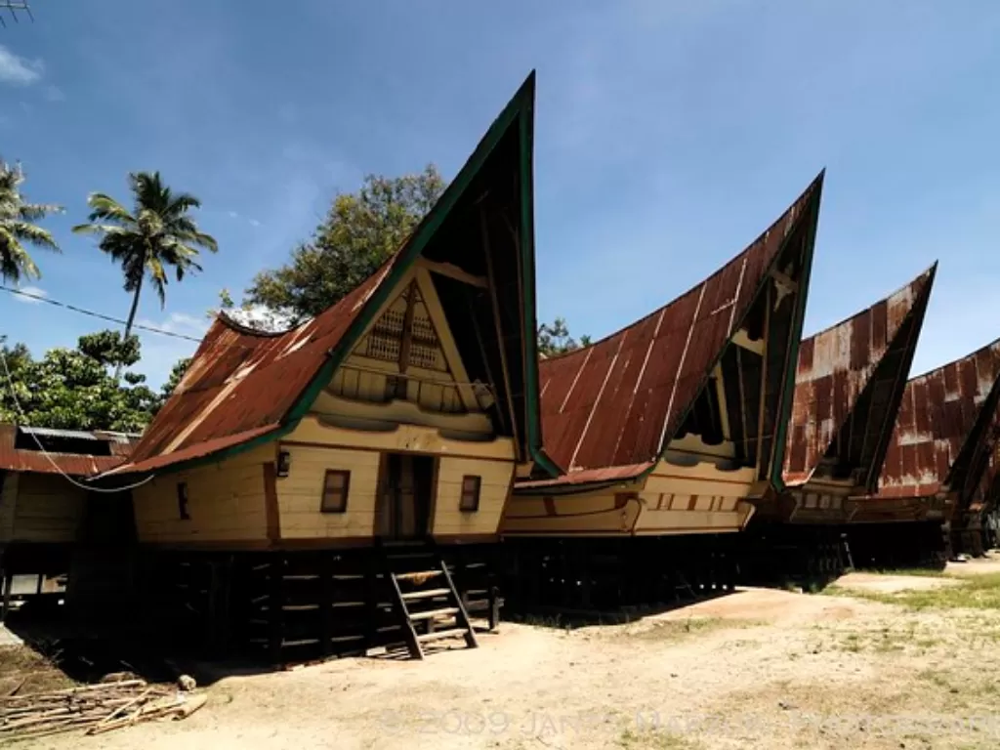

Rumah Gorga adalah salah satu jenis rumah adat yang berasal dari suku Batak Toba di Sumatera Utara. Rumah ini dikenal karena desainnya yang khas dan memiliki nilai budaya yang mendalam dalam kehidupan masyarakat Batak.
|  |  |
Rumah Gorga memiliki bentuk yang sangat khas dengan struktur yang dibangun di atas tiang-tiang tinggi, mirip dengan rumah adat Batak lainnya. Namun, yang membedakannya adalah bentuk atapnya yang melengkung dan biasanya memiliki bentuk seperti perahu terbalik atau atap pelana yang menjulang tinggi. Atap ini dibuat dari bahan alami seperti daun kelapa atau ijuk dan dirancang untuk melindungi rumah dari cuaca ekstrem.
Dinding Rumah Gorga biasanya terbuat dari bahan-bahan seperti kayu atau bambu yang disusun dengan rapi. Rumah ini memiliki beberapa ruang, dengan ruangan utama di tengah yang berfungsi sebagai tempat tinggal dan ruang-ruang tambahan di sisi-sisinya. Interior rumah sering kali dibagi menjadi area untuk tidur, berkumpul, dan penyimpanan barang. Ciri khas dari desain Rumah Gorga adalah ukiran-ukiran yang rumit di dinding dan tiang rumah, yang menggambarkan simbol-simbol adat Batak dan sering kali menceritakan cerita mitologis atau sejarah keluarga.
Rumah Gorga memiliki sejarah yang panjang dan mendalam dalam budaya Batak Toba. Rumah ini tidak hanya berfungsi sebagai tempat tinggal tetapi juga sebagai pusat kegiatan sosial dan upacara adat. Rumah Gorga adalah simbol status sosial dan kekuatan keluarga, terutama di kalangan keluarga bangsawan atau kepala adat. Sejarah rumah ini mencerminkan struktur sosial masyarakat Batak Toba yang memprioritaskan kekeluargaan, adat istiadat, dan simbolisme budaya.
Ciri khas utama Rumah Gorga adalah ukiran-ukiran yang menghiasi dinding dan tiang-tiang rumah. Ukiran ini biasanya mencakup motif-motif geometris, binatang, dan simbol-simbol budaya Batak lainnya, yang memiliki makna simbolis dan sering kali menceritakan kisah-kisah adat atau mitologi. Selain itu, rumah ini juga sering dilengkapi dengan teras atau beranda di bagian depan yang digunakan untuk berkumpul dan melakukan pertemuan adat. Struktur rumah yang dibangun di atas tiang-tiang tinggi juga membantu melindungi dari kelembapan dan gangguan hewan, serta memberikan ruang tambahan di bawah rumah yang sering digunakan untuk berbagai keperluan.
Secara keseluruhan, Rumah Gorga adalah contoh penting dari arsitektur tradisional Batak Toba, yang menggabungkan estetika, fungsionalitas, dan simbolisme budaya dalam satu kesatuan desain. Rumah ini merupakan warisan budaya yang berharga dan terus dihargai oleh masyarakat Batak sebagai simbol identitas dan tradisi mereka.